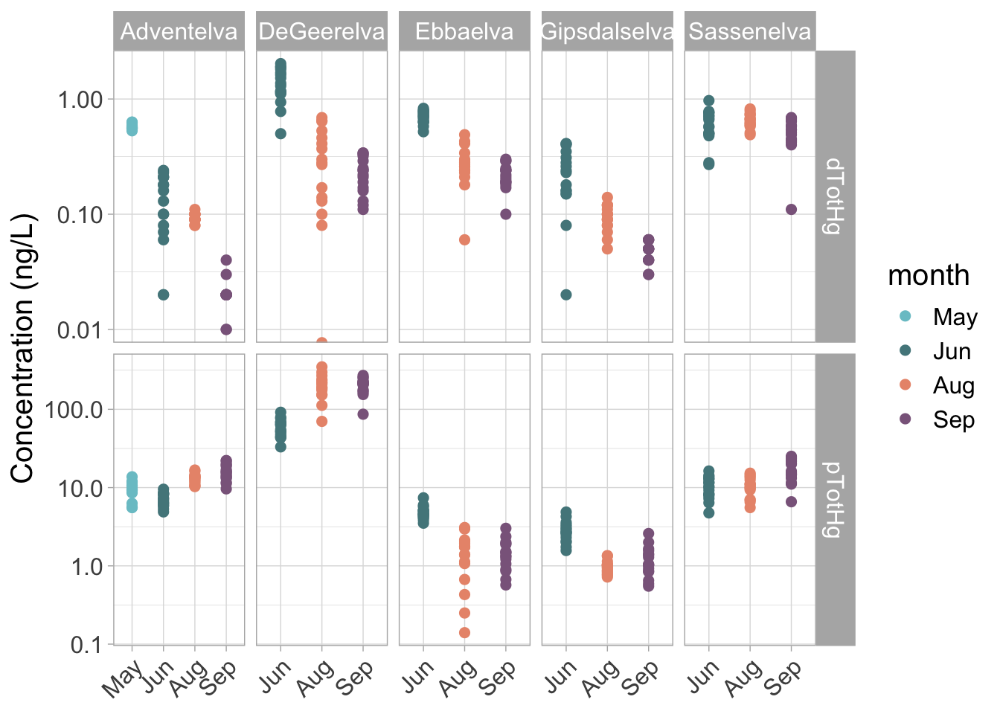

# Packages for data preparation and plotting
library(tidyverse)
library(lubridate)
library(vegan)1 River Water Chemistry
1.1 Load libraries
1.2 Load datafiles
# Load datafile
water_chem <- read_csv("datafiles/AB322_Water_Chemistry.csv")1.3 Data Preparation
Tip
Shortcut for the pipe (%>%): shift-command-m (mac); shift-control-m (windows)
water_chem <- water_chem %>%
mutate(Date = dmy(Date)) %>%
mutate(year = year(Date),month = month(Date, label = TRUE), day = day(Date)) %>%
rename("DOC" = "DOC_mg_L",
"POC" = "POC_mg_L",
"NO2_NO3" = "NO2_NO3_umol_L",
"PO4" = "PO4_umol_L",
"SiO2" = "SiO2_umol_L",
"SPM" = "SPM_mg_L",
"dTotHg" = "dTotHg_ng_L",
"pTotHg" = "pTotHg_ng_L")
# Arrange month factor chronologically
water_chem$month <- factor(water_chem$month, levels = c("May", "Jun", "Aug", "Sep")) 1.4 Explore water chemistry data
1.4.1 Carbon
# TOC, DOC, POC
P1 <- water_chem %>%
dplyr::select(River, month, DOC, POC) %>%
pivot_longer(cols= -c(River, month), names_to = "Carbon", values_to= 'Concentration') %>%
ggplot(aes(x = month, y = Concentration, color = month)) +
geom_point(size = 2, aes = 0.8) +
scale_color_manual(values=c("cadetblue3", "cadetblue4", "darksalmon", "plum4")) +
facet_grid(Carbon~River, scales= "free") +
ylab("Organic carbon (mg C/L)") +
theme_light() +
scale_y_log10() + xlab(NULL) +
theme(axis.text.x = element_text(angle = 45, vjust = 1, hjust=1),
text = element_text(size=15))
P1
1.4.2 Nutrients
# NO3_NO2, SiO2, PO4
P2 <- water_chem %>%
dplyr::select(River, month, NO2_NO3, SiO2, PO4) %>% drop_na() %>%
pivot_longer(cols= -c(River, month), names_to = "Nutrient", values_to= 'Concentration') %>%
ggplot(aes(x = month, y = Concentration, color = month)) +
geom_point(size = 2, aes= 0.8) +
scale_color_manual(values=c("cadetblue3", "cadetblue4", "darksalmon", "plum4")) +
facet_grid(Nutrient ~ River, scales = "free") +
ylab("Concentration (umol/L)") +
theme_light() +
scale_y_log10() + xlab(NULL) +
theme(axis.text.x = element_text(angle = 45, vjust = 1, hjust=1),
text = element_text(size=15))
P21.4.3 Contaminants
# Hg (Particulate and dissolved)
P3 <- water_chem %>%
dplyr::select(River, month, dTotHg, pTotHg) %>% drop_na() %>%
pivot_longer(cols= -c(River, month), names_to = "Mercury", values_to= 'Concentration') %>%
ggplot(aes(x = month, y = Concentration, color = month)) +
geom_point(size = 2, aes = 0.8) +
scale_color_manual(values=c("cadetblue3", "cadetblue4", "darksalmon", "plum4")) +
facet_grid(Mercury ~ River, scales = "free") +
ylab("Concentration (ng/L)") +
xlab("River") +
theme_light() +
scale_y_log10() + xlab(NULL) +
theme(axis.text.x = element_text(angle = 45, vjust = 1, hjust=1),
text = element_text(size = 15))
P3
# Hg per gram Carbon
P4 <- water_chem %>%
mutate(dTotHg_gC = dTotHg/DOC) %>%
mutate(pTotHg_gC = pTotHg/POC) %>%
dplyr::select(River, month, dTotHg_gC, pTotHg_gC) %>% drop_na() %>%
pivot_longer(cols= -c(River, month), names_to = "Mercury", values_to= 'Concentration') %>%
ggplot(aes(x = month, y = Concentration, color = month)) +
geom_point(size = 2, aes = 0.8) +
scale_color_manual(values=c("cadetblue3", "cadetblue4", "darksalmon", "plum4")) +
facet_grid(Mercury ~ River, scales = "free") +
ylab("Concentration (ng/gC)") +
xlab("River") +
theme_light() +
scale_y_log10() + xlab(NULL) +
theme(axis.text.x = element_text(angle = 45, vjust = 1, hjust=1), text = element_text(size=15))
P4